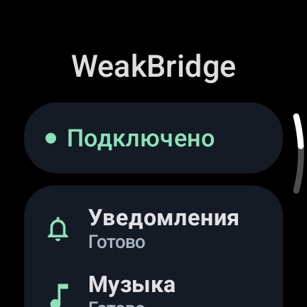

Notifications, your way
Receive new iPhone notifications, updates and removals. Filter apps and categories, group messages, hide previews and set quiet hours.
One watch app. No iPhone companion.
Connect Samsung Galaxy Watch to iPhone with WeakBridge: get iOS notifications and control music through a direct Bluetooth connection. No account, cloud relay or iPhone app.
Tested on Galaxy Watch6 SM-R930 + iPhone 13 / iOS 26.0. Beta · Wear OS / Android 13+.

Receive new iPhone notifications, updates and removals. Filter apps and categories, group messages, hide previews and set quiet hours.
Use the watch’s system player for track information, play/pause, next/previous and relative volume. Audio stays on your iPhone or selected headphones.
One watch APK uses Apple Notification Center Service (ANCS) and Apple Media Service (AMS). No Internet permission, analytics or persistent message history.
Download the APK from GitHub Releases. Use Wireless ADB to install it, then turn Wireless debugging off. Requires Android 13 / API 33 or later.
Open Connection → Connect iPhone in WeakBridge and approve visibility. Select the watch in iPhone Settings → Bluetooth and confirm both codes.
Allow system notification sharing on iPhone. Select the saved iPhone in WeakBridge, then send a new notification and start music to check both services.
WeakBridge notification mirroring and music controls have been tested on Galaxy Watch6 SM-R930 with iPhone 13 / iOS 26.0. The watch must already be configured; this is not full Galaxy Wearable support on iOS.
No. WeakBridge is installed only on the watch. The iPhone provides its built-in ANCS and AMS Bluetooth services. No account or cloud relay is required.
The APK requires Wear OS with Android 13 / API 33 or later. Galaxy Watch6 is the confirmed test device. Other watch models, firmware and music apps need separate testing.
The bridge exposes actions supplied by iOS for each notification. It does not add arbitrary text replies, voice-call audio, music streaming or health synchronization.
There is no continuous scan, periodic keepalive or permanent wake lock. Recovery attempts are bounded. Battery savings have not been quantified in comparable long-term measurements. See the BLE power design and repeatable measurement method.